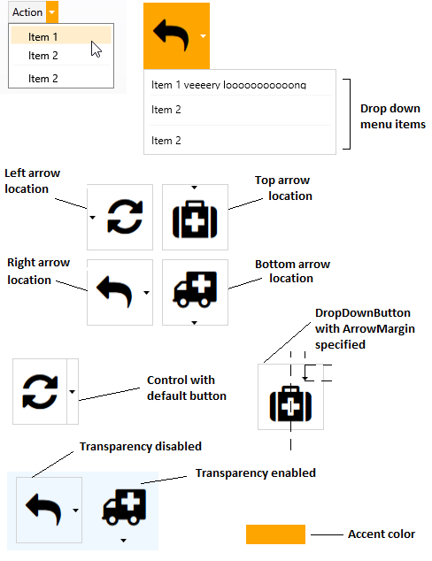

The control is made up of two buttons side by side. The First button works as a regular button and the second one will display a customizable drop down menu under the control.
Inherits from Catel.Windows.Controls.UserControl.

Properties
| Property name | Description |
|---|---|
| AccentColorBrush | Gets or sets accent color. |
| ArrowLocation | Gets or sets arrow location (Left, Top, Right or Bottom). |
| ArrowMargin | Gets or sets arrow margin. |
| Command | Gets or sets the command to execute when the button itself is clicked. |
| DropDown | Gets or sets the drop down content (e.g. context menu). |
| EnableTransparentBackground | Gets or sets whether transparency enabled. |
| Header | Gets or sets button caption. |
| ShowDefaultButton | Gets or sets whether arrow button has default view. |
How to use
Specify Header and DropDown. If you need to handle button click itself bind to Command property.
<orc:DropDownButton Header="Action" Command="{Binding DefaultAction}">
<orc:DropDownButton.DropDown>
<ContextMenu>
<MenuItem Header="Item 1"/>
<MenuItem Header="Item 2"/>
<Separator/>
<MenuItem Header="Item 2"/>
</ContextMenu>
</orc:DropDownButton.DropDown>
</orc:DropDownButton>